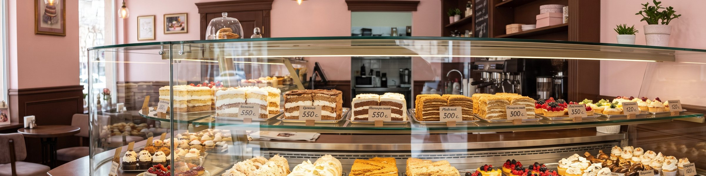
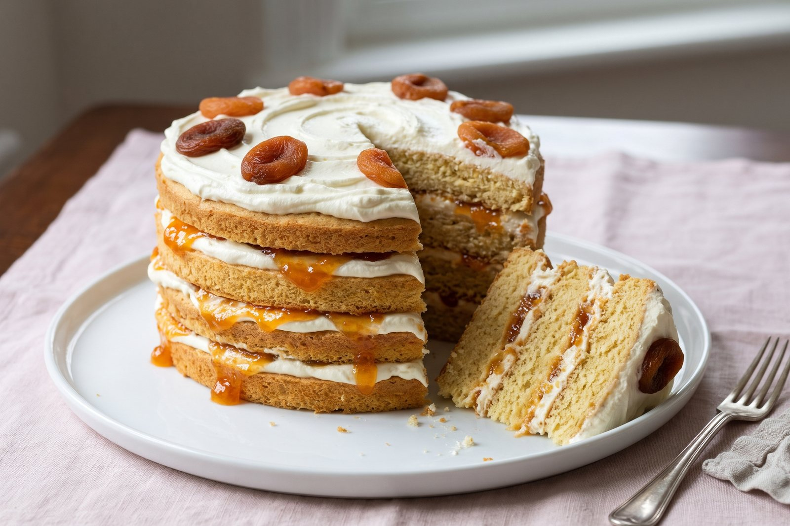
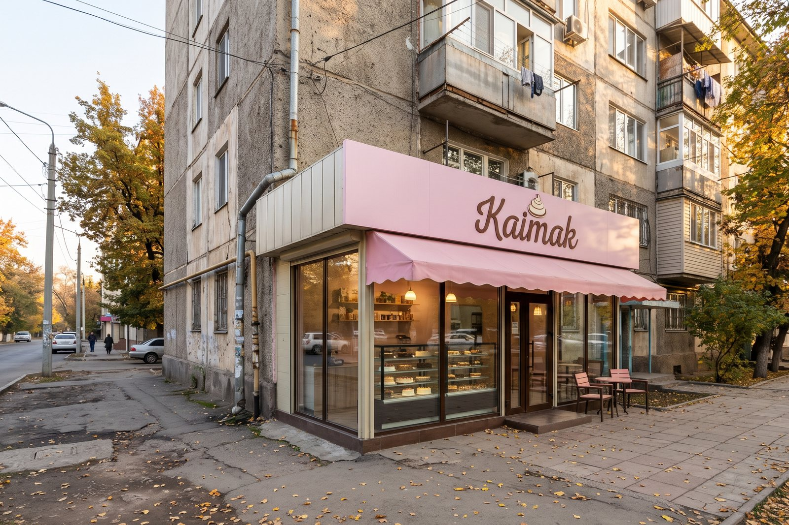
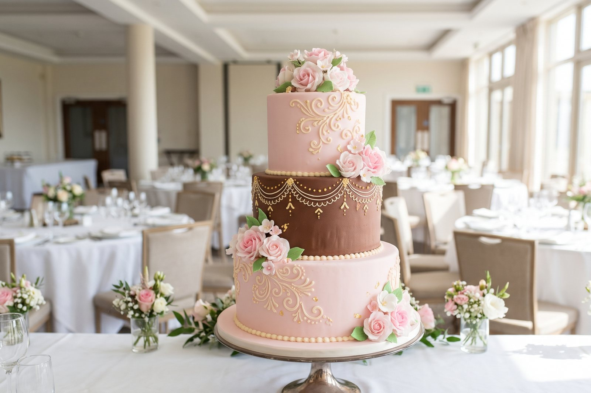
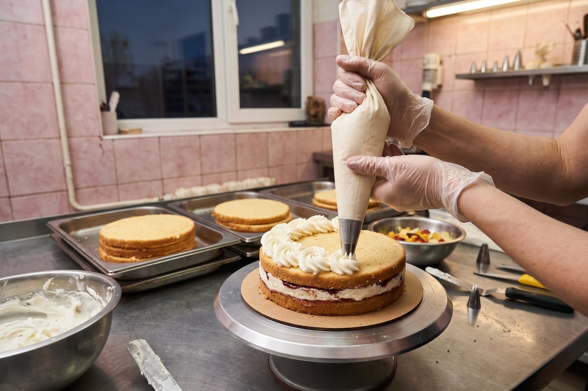
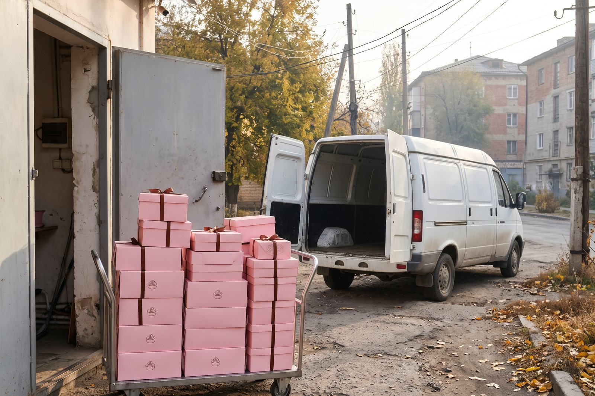

Kaimak
Wedding season is over, so we have slots again: order your cake three days ahead.
♥ 66 · Comment · Share
Whipped kaimak, apricot jam, and a cake for every toy.
Sponge layered with whipped kaimak and apricot jam, baked every morning in our own bakery.
140 som whole · 12 a sliceOrder on Tulpar12 som a slice
Honey layers, sour cream. 10 a slice
9 a slice
A slice of Ak Kaimak and a pot of tea before 11:00, every day.
Free delivery in Talas for orders over 300 som until the end of November.
Until 30 November 2026Wedding season is over, so we have slots again: order your cake three days ahead.
♥ 66 · Comment · ShareA slice of Ak Kaimak and a pot of tea before 11:00, every day.
Free delivery in Talas for orders over 300 som until the end of November.
Until 30 November 2026Wedding season is over, so we have slots again: order your cake three days ahead.
♥ 66 · Comment · ShareAk Kaimak – 140 som. Bardık dükööndördö.
♥ 28 · Comment · Share
Ak Kaimak on the counter
The first Kaimak, by the Opera
A three-tier wedding cake in pink and cocoa
Morning at the central bakery
Pink Kaimak boxes stacked for deliveryAk Kaimak every birthday in our family.
Kaimak cake shops, Talas, since 2014. Our Ak Kaimak: sponge layered with whipped kaimak and apricot jam, 140 som whole or 12 a slice. Wedding and birthday cakes to order, baked in our own central bakery. Fourteen shops in Talas.
Кондитерские «Каймак» с 2014 года. «Ак Каймак» – 140 сом целый, 12 сом кусочек. Торты на свадьбы и дни рождения на заказ.
15 locations on Kartalar: Talas 15.
Early shift from 05:00. Experience with cream cakes; we teach the Ak Kaimak.
Friendly, Iradi and Russian. Shifts 08:00-15:00 or 15:00-22:00.
To apply: send your CV through the Message button or come to the office.